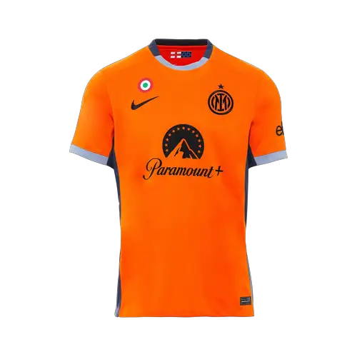

InterMilan
Football Club
| Competition | Year of winning. | Teams | Result | Statistics |
| Serie A | 2023-2024. | InterMilan | Inter (20º Title) | Top scorer Flag of Argentina Lautaro Martínez (23) -Matches played 339 -Goals scored 878 (2.59 per match) |
| Coppa Italia | 2022-2023 | InterMilan | Inter (9º Title) | Top scorer Flag of Morocco Walid Cheddira (5) -45 matches played -Matches scored 143 (3.18 per match) |
| Serie A | 2020-2021 | InterMilan | Inter (19º Title) | -Best Player Flag of Belgium Romelu Lukaku[1] -Top scorer Portugal flag Cristiano Ronaldo (29) -Best goalkeeper Flag of Italy Gianluigi Donnarumma[1] -Matches played 380 |
Lautaro Martinez 
captain
Fresh from securing the Scudetto and their second star, Inter are ready to play in front of their home fans. However, Torino are aiming to spoil the party
Home Kit 
T-Shirt
€54.00
Shop NowIn the 2023/24 Home Match shirt the iconic black and blue stripes feature a digital mosaic pattern that celebrates the classic fit and modern architecture of the ancient city. The internal motif commemorates the bond between Inter and the city we call home.
Away Kit 
T-shirt
€45.00
Shop NowThe 2023/24 Away Match shirt celebrates the 60th anniversary of the first triumph in the European Cup which took us to the top of Europe
Third-kit 
T-shirt
€25.00
Shop NowThe new INTER 2023/24 orange Third shirt with gray collar is inspired by that of the 2000/2001 season,